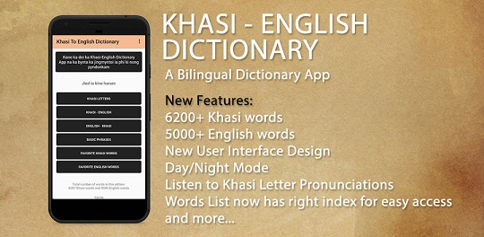

Books
Ki jingpyrkhat ba man ka sngi
Rs. 150/-
Published: 2020
This book speaks about the experiences of the author in his day to day life. It consist of around a total of 40 notes, poems and writings together. The notes, writings, quotes, poems in this book are based on everyday experiences, nature, the place where the author is from and his interests. Certain topics include computer related subjects and language used is English, Khasi and a combination of both. The author has seen the impact of Technology in Society and has written down a few of them in pen and paper, he also writes about his city, his personality and his personal experience with friends and family.
View the raw contents of the book
Projects
Hebrew Interlinear Old Testament Android App

Khasi To English Dictionary
Minor Projects
Web Based Management System
Origin Diagnostic Laboratory, Shillong
2017
Find More Projects
Visit my github profileSupport Me
Currently I'm sponsored by Sngur. If you like what I make and want to help out, you can make a one time donation. Press the "Buy Me A Coffee" button to donate. Your amount will go towards me and to Sngur Shillong for developing more apps.
Education
Post-Graduation (M.C.A)
UGC NET Qualified (2018)
St. Anthony’s College, Shillong
2015 - 2018
Graduation (B.C.A)
St. Edmund’s College, Shillong
2012 - 2015
HSSLC & SSLC
St. Anthony’s Higher Secondary School, Shillong
2012 & 2010
Programming Skills
LANGUAGES: C, C#, Dart, Java, Linux Shell Scripts, MySQL, NET, PostgreSQL, PHP, Python, HTML, JS, CSS, XML.
Personal
Gender: Male
Marital status: Single
Religion: Christian
Nationality: Indian
Languages Known: English, Khasi.
Community
We all live in our communities, being part of a community and giving back to the community is my goal. Therefore, I'm using my skills to take part and give back to the community.
Meghalaya Developers Community
A community that aims to promote open source programming in Meghalaya and NorthEast India.
Sngur
A community that aims to make an impact in society using IT.
Experience
NATIONAL INFORMATICS CENTRE (NIC), SHILLONG
Programmer
Department: Directorate of Agriculture
Oct, 2019 - Aug, 2021
To develop mobile and web applications, working on IT projects for the Department of Agriculture.
MEGHALAYA SOCIETY FOR SOCIAL AUDIT AND TRANSPARENCY (MSSAT), SHILLONG
Web Manager
Dec, 2018 - Oct, 2019
To manage the web content of the organization, email, work with database technologies, web development MIS application, IT stock management and other office duties.
PRO VIBES STUDIO, SHILLONG
Developer
Jan, 2018 - Dec, 2018
Started as an intern for 6 months and later continued to work on an android application for music player and store.
Certification
Certified Program in
Junior Software Developer
ICT ACADEMY, Tamil Nadu
organized by AICTE
2018
CCNA
CISCO NETWORKING ACADEMY,
ST. ANTHONY’S COLLEGE, Shillong
2018
SAP
SAP ACADEMY PROGRAM,
ST. ANTHONY’S COLLEGE, Shillong
2018
SYMANTEC IT SKILLS DEVELOPMENT AND EDUCATION PROGRAM
ETPL, Shillong
2013
Graphics and Web Design Course
ARENA ANIMATION, Shillong
2013